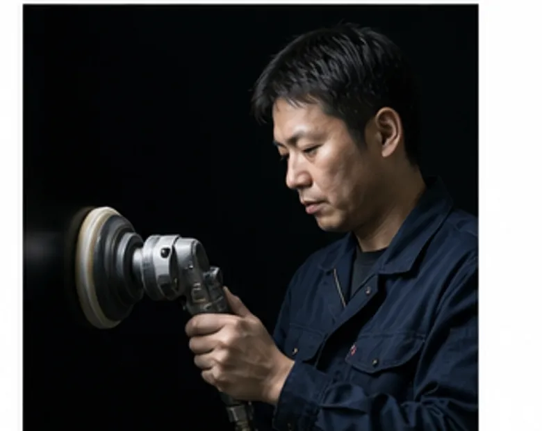
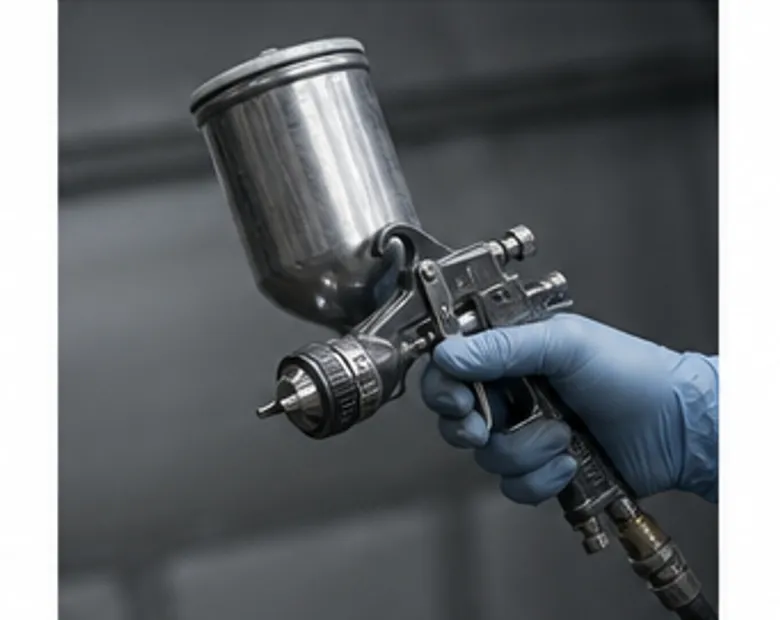

塗装課 課長 入社19年
志水 頼人しみず よりと
艶引きの判断はこの人に聞けば早い。休日は木工旋盤を回している。
艶は、数字で指定されても最後は目で決めます。照明の下で角度を変えて、何度も見る。若い人には「迷ったら一晩置いてもう一度見ろ」と言っています。

塗装課 入社6年
穂苅 ゆりほかり ゆり
色合わせの担当。「一度で決めるより、三度見直す」が口ぐせ。
同じステインでも、木によって色の入り方がまるで違います。見本を作るときは、実際に使う材の端材をもらうようにしています。

塗装課 入社11年
宇佐見 拓うさみ たく
吹付の担当。スプレーガンの手入れには誰よりも時間をかける。
吹付は、距離と速さが一定なら半分は決まります。残りの半分は道具の状態。毎日の分解掃除が、いちばんの近道だと思っています。

塗装課 入社3年
檜垣 翔太ひがき しょうた
研磨と検品を担当。前職は飲食店の厨房。
最初は、先輩が見つける傷がまったく見えませんでした。いまは光の当て方を変えれば、だいたい見つけられます。次は吹付を任せてもらうのが目標です。
CONTACT
面のことなら、まず相談を。
図面の段階からご一緒できます。